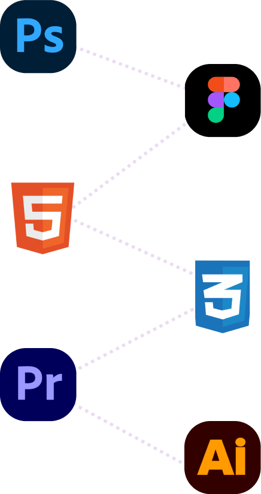

About Me

Who Am I??
If you still aren't aware of who I am well I'm Christina! I consider myself a creative designer who is confident in my UI skills. I am open-minded and tend to understand users’ needs, and with this, I bring valuable information and skills to the table.
Art has always been such an important factor to me which is why I am pursing my passion! My goal in life is to push beyond my limits in the creative world. I don’t want to be stuck working with things I’m comfortable with.
I want to keep learning and growing, trying new methods and materials. I also just love helping people, and to do that with art brings me much joy!
My Resume:
Education
Drexel University Westphal College of Media Arts & Design | Philadelphia, PA
Bachelor of Science in User Experience & Interaction Design Cumulative
Anticipated Graduation: June 2029
GPA: 4.0
Experience
Designing a Guitar Tuning App
UX/UI Designer | Philadelphia, PA | 03/2025 to 04/2025
Created and designed a high-fidelity prototype of a guitar-tuning app, Tune Today, that allows users to easily tune their guitars and learn new songs through an intuitive interface
Researched and analyzed pain points found in other guitar tuning apps to develop a responsive interface that features customization options and accurate feedback
Focused on developing well-designed microinteractions to enhance usability and create a visual and functional design system.
Mar Thoma Church of Philadelphia
UX/UI Designer | Philadelphia, PA | 09/2024 to 03/2025
Redesigned and developed the Mar Thoma Church of Philadelphia’s website to improve navigation, accessibility, and user engagement
Conducted a card-sorting activity and moderated user testing sessions with voluntary participants to evaluate and improve the usability of the website
Presented a more organized and concise website design that better met user needs and enhanced user experience.
Fandango Homepage Redesign
UX/UI Designer | Philadelphia, PA | 12/2024
Oversaw team members' work and efforts through regular Zoom meetings to track progress
Collaborated with my team to create low-fidelity wireframes that aimed to enhance navigation, reduce cognitive load, and create an intuitive user experience
Developed and redesigned the homepage to address key usability issues from the original, resulting in a more user-friendly layout
Department of Motor Vehicles Building & Kiosk Redesign
UX/UI Designer | Philadelphia, PA | 12/2024
Collaborated with a team to research, design, and create a mockup kiosk & scale model of the DMV building
Analyzed issues with the existing DMV processes and accessibility issues that could arise with the kiosk's usability
Built a life-sized, accessible kiosk model using foam board and recycled cardboard scraps to present to our peers and demonstrate a user's experience
Letters for Destiny
UX/UI Designer | Philadelphia, PA | 09/2022 to 06/2024
Designed letters to be sent to 30+ children in hospitals all over America to provide comfort and encouragemen
Produced handmade and digital letters using cardstock paper and the digital application Procreate
Assured that each letter created was unique by customizing messages and following different themes to ensure each child received a unique experience
Organization
Drexel CHI User Experience Club | 2024-Present
Indian Pakistani Cultural Organization | 2022-2024
Central High School Letters for Destiny Club | 2022-2024
Awards
Westphal Portfolio Scholarship, Drexel University | 2024-Present
Founder's Scholarship, Drexel University | 2022-2024
My Skill Set:
I have experience with the following software/languages!
